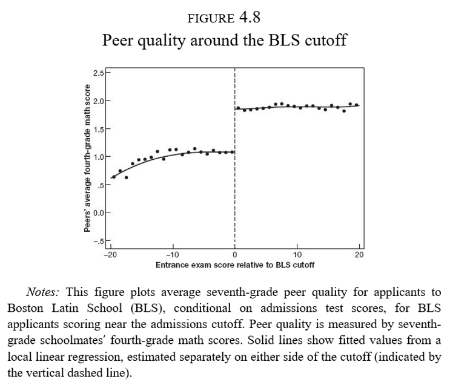
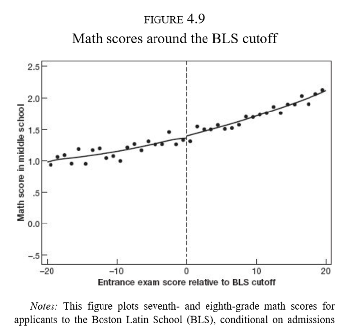

Clase 21. Discontinuidades difusas
Inferencia Causal
Irvin Rojas
rojasirvin.com
Centro de Investigación y Docencia Económicas División de Economía
Motivación
Los diseños con discontinuidades nos permiten explotar cambios discretos en la elegibilidad y/o participación en programas o intervenciones basadas en una regla
Las regresiones nítidas implican que \(D_i\) es determinística con respecto al corte \(x_0\)
Cuando la relación no es determinística, otras diseños son posibles de implementar
Discontinuidad en la regresión difusa
Discontinuidad en la regresión difusa
Hasta ahora hemos tratado con una regla determinística que determina el tratamiento en función de la variable de asignación
Alrededor de una regla de asignación puede haber individuos que decidan o no participar
En este caso, la discontinuidad afecta la intensidad del tratamiento o las probabilidades de recibirlo, en vez de generar un simple encendido-apagado
La relga de Maimonides
Angrist, J. D., y Lavy, V. (1999), Using Maimonides’ rule to estimate the effect of class size on scholastic achievement
¿Efecto del tamaño de clase en el desempeño de los alumnos?
Un problema fundamental en la economía de la educación
La regla de Maimonides permite generar variación útil para resolver esta pregunta
“Un maestro estará a cargo de 25 niños. Si el número de niños en la clase excede 25 pero no es mayor que 40, deberá tener un asistente para ayudarle en la clase. Si hay más de 40, se deberán asignar dos maestros.”
— Maimonides, Capítulo 2, Las reglas del estudio de la Torá, Mishné Torá.
Tamaño de la clase en Israel
En Israel, el tamaño de la clase está limitado a 40 estudiantes
Grados con 41 estudiantes son partidas en dos grupos
Grados con 81 estudiantes son partidas en tres grupos
\[ m_{sc}=\frac{e_s}{int\left[\frac{(e_s-1)}{40}+1\right]} \]

RD difusa + VI
- Se estima una ecuación por MC2E:
\[Y_{isc}=\alpha_0+ \alpha_1 d_s +\beta_1 e_s + \beta_2 e_s^2+\ldots+\beta_p e_s^p + \rho n_{sc} + \nu_{isc}\]
Donde \(Y_{isc}\) es la calificación en una prueba de matemáticas del estudiante \(i\) en la escuela \(s\) y en el grupo \(c\)
\(n_{sc}\) es el tamaño del grupo
\(m_{sc}\) es el tamaño del grupo que predice la regla de Maimonides y se usa como instrumento de \(n_{sc}\)
\(e_s\) es el número de alumnos, el score de esta aplicación
\(d_s\) proporción de estudiantes desaventajados (no es estrictamente necesario para el RD, es un control)
\(m_{sc}\) como VI
\(m_{sc}\) no predice el tamaño de clase de forma perfecta
Este instrumento implícitamente combina la discontinuidades y los cambios de pendiente en cada discontinuidad de una forma compacta
En otras aplicaciones esto se logra parametrizando las funciones de manera flexible
Efectos estimados

Fuente: Angrist & Pischke (2009)
La ilusión de la élite
La ilusión de la élite
Escuelas de élite, exam schools, altamente competitivas en Nueva York y Boston
Bajas tasas de admisión
¿Cómo diferenciar el valor agregado de la escuela del hecho de que la acta selectividad hace que a estas escuelas asistan solo los alumnos más brillantes?
¡Ojalá pudiéramos asignar alumnos al azar!
Los estudiantes en estas escuelas de élite comparten clases con estudiantes aventajados
La regla de asignación
Cada escuela tiene un corte de puntaje de admisión
En la escuela más competitiva de Boston aquellos estudiantes debajo del corte nunca asisten a dicha escuela
Los que están arriba del corte casi siempre acaban en la BLS

La regla de asignación
- Sin embargo, aquellos que no alcanzan el puntaje mínimo de la BLS acaban de cualquier forma en una escuela de élite

La regla de asignación
Hay una dimensión que genera una discontinuidad: efectos de pares o peer effects
Es una de las preocupaciones más importantes de política educativa en casi cualquier país
Tener buenos (malos) compañeros afecta los resultados del individuo \(i\)
Quienes ingresan a la BLS (séptimo grado) tuvieron compañeros con mejor desempeño en matemáticas cuando iban en cuarto grado

Modelo de efectos de pares
- Un modelo de efectos de pares:
\[Y_i=\theta_0+\theta_1\bar{X}_{(i)}+\theta_2 X_i + u_i\]
\(Y_i\) es el resultado de un examen de matemáticas en el séptimo año del individuo \(i\)
\(X_i\) es el resultado de un examen de matemáticas en el cuarto año del individuo \(i\)
\(\bar{X}_{(i)}\) es el resultado promedio de un examen de matemáticas en el cuarto año de los compañeros de \(i\) sin incluir \(i\)
Otra notación en la literatura escribe esto como \(\bar{X}_{(-i)}\)
Los resultados están estandarizados por lo que los coeficientes se interpretan en términos de desviaciones estándar: \(\hat{\theta}_1=0.25\sigma\)
RD difuso + VI
Problemas
Sabemos que en la discontinuidad, la calidad de los pares cambia drásticamente
Características de los hogares (habilidad de los padres)
Doble causalidad: \(i\) afecta a \(j\) pero \(j\) afecta a \(i\) a la vez
Variables instrumentales:
Queremos conocer el efecto de la calidad de los pares en el desempeño de matemáticas
Usamos el corte mínimo para ser aceptado en BLS como instrumento de la calidad de los pares
Forma reducida
- Si solo usamos el corte para ser aceptado en BLS:
\[Y_i=\alpha_0+\rho D_i + \beta_0 R_i + \epsilon_i\]
Se obtiene \(\hat{\rho}=-0.02\), \(s.e.=0.10\)
Este es un modelo de forma reducida (variable de interés en función de la posición respecto al corte)
Es el efecto causal de estar antes o después del corte

Modelo de VI
- Modelo estructural:
\[Y_i=\alpha_2+\lambda \bar{X}_{(i)} + \beta_2 R_i + \epsilon_{2i}\]
- Con una primera etapa
\[\bar{X}_{(i)}=\alpha_1 + \phi D_i + \beta_1 R_i + \epsilon_{1i}\]
En la primera etapa \(\hat{\phi}=0.80\sigma\), como lo habíamos visto ya en la Figura 4.8
En la segunda etapa \(\hat{\lambda}=-0.023\), \((s.e.=0.13)\)
Modelo de VI
Fuente: Angrist & Pischke (2014)
La ilusión
No hay tal ganancia por compartir clase con alumnos brillantes
La gente sigue percibiendo que sus hijos ganan al ir a escuelas de élite
Posiblemente los egresados de estas escuelas tengan mayores ingresos
Las ganancias que se puedan obtener no son vía el efecto de pares o un mejor rendimiento cognitivo
RD difusa: resumen
RD difusa: resumen
RD difusa explota discontinuidades en la probabilidad o valor esperado del tratamiento condicional en una variable
El resultado es que la discontinuidad se convierte en una VI para el estado del tratamiento en vez de una variable que se prende y apaga
\[ P(D_i =1|x_i)= \begin{cases} g_1(x_i) & \mbox{if } x_i \geq x_0 \\ g_0(x_i) & \mbox{if } x_i < x_0 \end{cases} \]
Las funciones \(g_0\) u \(g_1\) difieren en \(x_0\)
Supongamos que \(g_1(x_0)>g_0(x_0)\), es decir, \(x_i\geq x_0\) hace el tratamiento más probable
RD difusa: resumen
- La relación entre el estado de tratamiento y \(x_i\) puede ser escrita como:
\[E(D_i|x_i)=P(D_i=1|x_i)=g_0(x_i)+[g_1(x_i)-g_0(x_i)]T_i\]
con \(T_i=\mathcal{I}(x_i\geq x_0)\)
- Escribiendo las funciones \(g_0\) y \(g_1\) como polinomios flexibles de \(x_i\)
\[E(D_i|x_i)=\gamma_{00}+\gamma_{01}x_i+\gamma_{02}x_i+\ldots+\gamma_{0p}x_i^p +\pi T_i + \gamma_{1}^{*}x_i T_i+ \gamma_{2}^{*}x_i^2 T_i+\ldots+ \gamma_{p}^{*}x_i^p T_i\]
RD difusa: resumen
En la primera etapa podríamos usar \(\{x_iTi, x_i^2 T_i,...,x_i^p T_i\}\) como instrumentos para \(D_i\)
Una primera etapa con interacciones sugeriría emplear una segunda etapa también con interacciones
La versión más simple solo usa \(T_i\) como instrumento
La primera etapa será
\[D_i=\gamma_0+\gamma_1 x_i + \gamma_2 x_i^2 + \ldots + \gamma_p x_i^p + \rho T_i + \xi_{i}\]
- La forma reducida o ITT de este modelo es:
\[y_i=\beta_0+\beta_1 x_i + \beta_2 x_i^2 + \ldots + \beta_p x_i^p + \delta\ T_i + u_{i}\] - Mientras que la ecuación estructural
\[y_i=\pi_0+\pi_1 x_i + \pi_2 x_i^2 + \ldots + \pi_p x_i^p + \lambda\ D_i + u_{i}\] se estima por MC2E usando \(T_i\) como instrumento de \(D_i\)
Próxima sesión
Veremos tres ejemplos de diseños con discontinuidades
Del Valle, A., de Janvry, A., & Sadoulet, E. (2020). Rules for recovery: Impact of indexed disaster funds on shock coping in Mexico. American Economic Journal: Applied Economics, 12(4), 164-95.
Dell, M. (2015). Trafficking networks and the Mexican drug war. American Economic Review, 105(6), 1738-79.
Aguilar, A., Gutierrez, E., & Seira, E. (2021). The effectiveness of sin food taxes: Evidence from Mexico. Journal of Health Economics, 77, 102455.
Finalmente replicaremos en R:
- Anagol, S., & Fujiwara, T. (2016). The runner-up effect. Journal of Political Economy, 124(4), 927-991.
Presentación creada usando el paquete xaringan en R.
El chakra viene de remark.js, knitr, y R Markdown.
Material de clase en versión preliminar.
No reproducir, no distribuir, no citar.